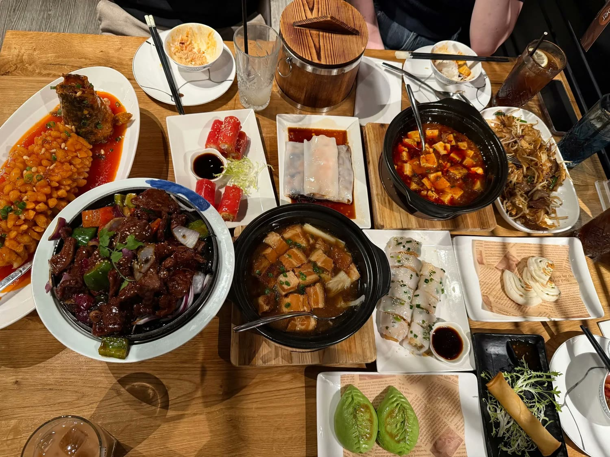
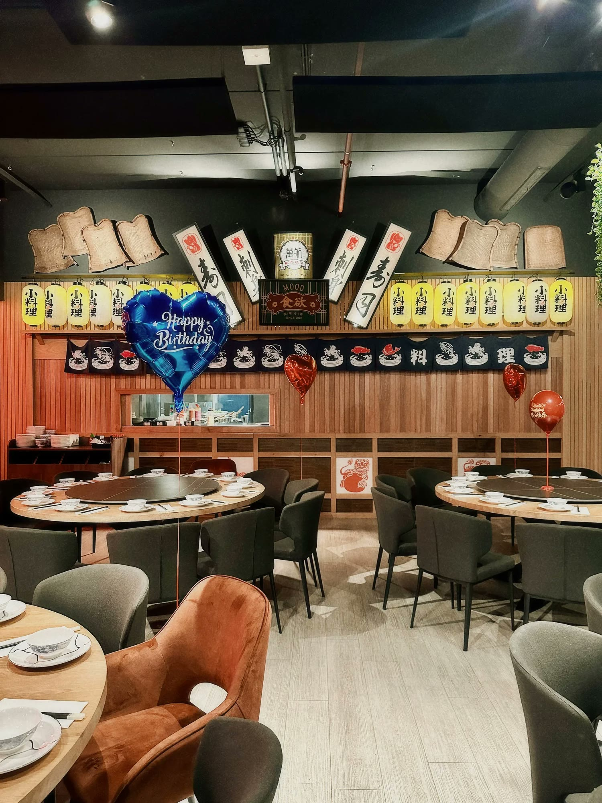
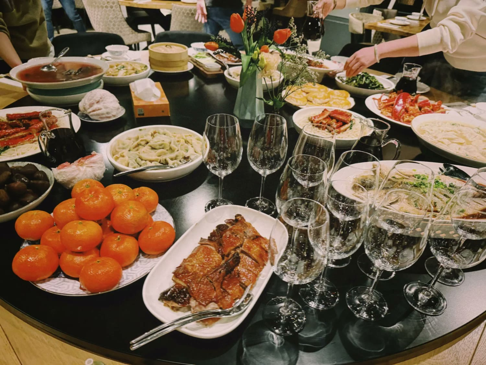

Chen Jia Yan
Chen's Family Cuisine
Authentiek Chinees eten in hartje Eindhoven. Met de pittige, tintelende Sichuan-keuken als specialiteit, en elk gerecht pas bereid als jij het bestelt.
Open op maandag, dinsdag, donderdag en zondag van 12:00 tot 21:00, vrijdag en zaterdag tot 22:00. Woensdag gesloten.

Midden in de stad
Op loopafstand van het station, tussen winkels en cafés. Q-Park Admirant ligt direct onder het restaurant.
Vers bereid
Groenten, vlees en specerijen van goede kwaliteit. Elk gerecht maken we pas klaar nadat je hebt besteld.
Voor iedereen aan tafel
Lekkere vegetarische gerechten en zorgvuldig bereide halal opties. Heb je een speciale wens? We denken graag mee.
De top 3 van onze chef
Drie gerechten die laten zien waar onze keuken voor staat.
-
水煮牛肉
Sichuan boiled beef
Een Sichuan-klassieker in een rijke, smaakvolle bouillon. Je kiest zelf hoe pittig de soepbasis wordt, van mild tot extra pittig. Met malse plakjes rund, verse groenten en het kenmerkende tintelende vuur van Sichuanpeper. Geurig, stevig en troostend.
€ 34,80
-
松子鱼
Sweet & sour fried fish
Een hele vis, licht bestoven met bloem en goudbruin gebakken. Met onze huisgemaakte zoetzure saus en knapperige pijnboompitten. Krokant van buiten, mals van binnen: een echt feestgerecht vol smaak en traditie.
€ 39,80
-
Mapo tofu
Een stevige, troostende Sichuan-klassieker: zachte tofu gestoofd in een rijke, pittige chilibonensaus met knoflook, gember, gefermenteerde zwarte bonen en Sichuanpeper, voor die typische málà-smaak. Traditioneel met gehakt, maar ook helemaal vegetarisch te bestellen.

Bij Chen's Family Cuisine is eten familie
Ons verhaal begint in een klein dorp in China, waar de ouders van de eigenaar een bescheiden, geliefd restaurant hadden. Tussen sissende woks, rijke bouillons en de geur van steranijs en chili-olie groeide hun zoon op met het ritme van de traditionele Chinese keuken. Die liefde voor smaak en familie werd zijn levenslange passie.
In Eindhoven zetten we die traditie voort, opnieuw uitgevonden. We zijn gespecialiseerd in het stevige, tintelende vuur van de Sichuan-keuken, maar omarmen ook fusion: regionale Chinese smaken met moderne culinaire accenten. Of het nu een klassieke mapo tofu is of een eigen kijk op dumplings, elk gerecht laat zowel erfgoed als vernieuwing zien.
Van onze familiekeuken naar jouw tafel: welkom.
Reserveren
每次聚会都始于座. 让我们为您留一个座位.
Elk samenzijn begint met een stoel. Laat ons er een voor je vrijhouden.
Stuur een bericht met je reserveringsverzoek. We reageren zo snel mogelijk; je reservering staat pas vast als wij hebben geantwoord.
Stuur een WhatsAppJe kunt ons ook een bericht sturen via WeChat.
如需预订，请致电或通过Whatsapp或微信给我们发短信!

Met meer dan 5 personen?
Bel ons dan vooraf. We hebben maar een beperkt aantal grote ronde tafels, en die houden we graag voor je vrij.
如果您计划与 5 人以上的团队一起参观，我们恳请您提前致电，因为我们的大型圆桌数量有限。
Je vindt ons hier
Nieuwe Emmasingel 325611 AM Eindhoven
+31 6 88 88 20 20 (ook WhatsApp en WeChat)
chensfamilycuisine@gmail.com
Openingstijden
| Maandag | 12:00 tot 21:00 |
|---|---|
| Dinsdag | 12:00 tot 21:00 |
| Woensdag | gesloten |
| Donderdag | 12:00 tot 21:00 |
| Vrijdag | 12:00 tot 22:00 |
| Zaterdag | 12:00 tot 22:00 |
| Zondag | 12:00 tot 21:00 |
Parkeren (betaald)
- Q-Park Centrum De Admirant, Emmasingel 29, 5611 AZ Eindhoven. Direct onder het restaurant: loop de uitgang uit en we zitten links.
- Q-Park Mathildelaan, Mathildelaan 2A, 5611 BL Eindhoven. 4 minuten lopen.
- Q-Park Hooghuis, Keizersgracht 9a, 5611 GW Eindhoven. 4 minuten lopen.
We zoeken nieuwe collega's
Wil je bij ons werken? Stuur een mail naar chensfamilycuisine@gmail.com of spreek ons aan in het restaurant.